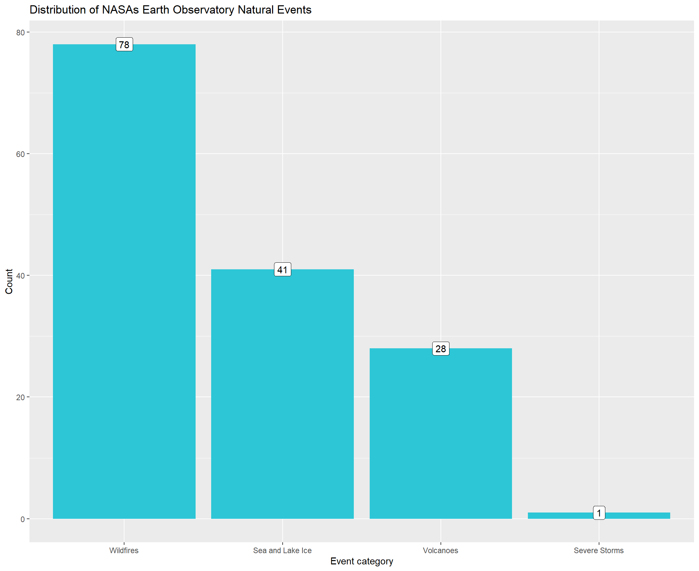
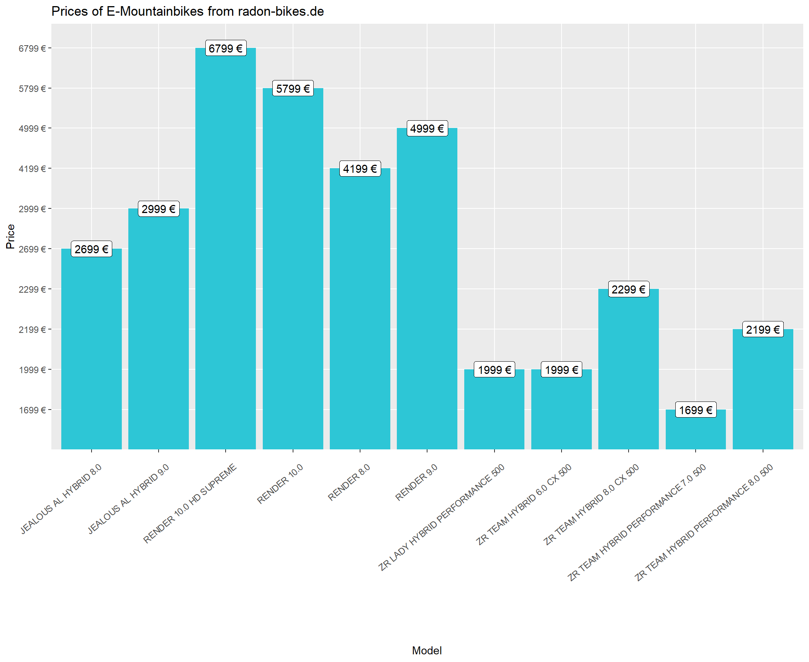
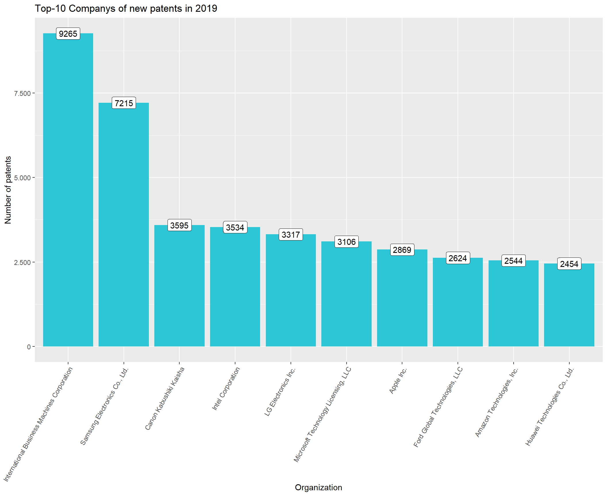
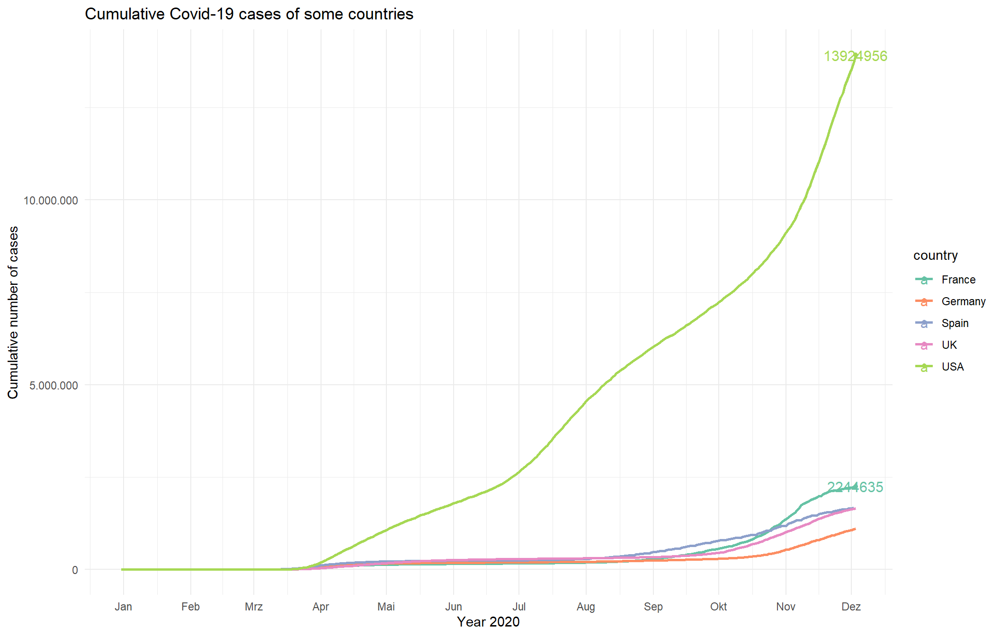
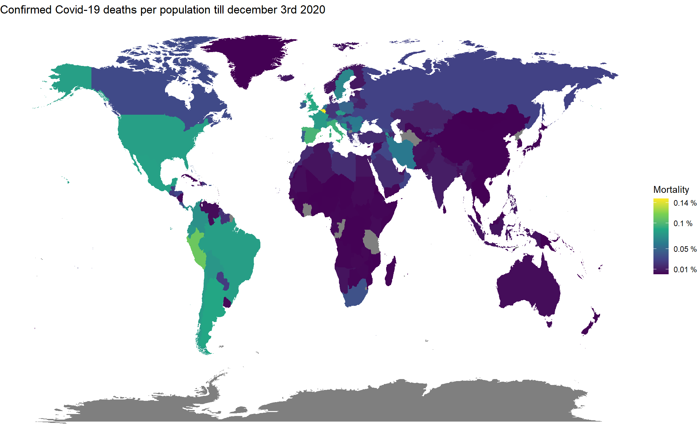

Journal (reproducible report)
Magnus Küpker
2020-12-03
1 Introduction : SALES ANALYSIS
1.1 Bike sales by states
# 1.0 Load libraries ----
library(tidyverse)
library(readxl)
library(lubridate)
# 2.0 Importing Files ----
bikes_tbl <- read_excel(path = "00_data/01_bike_sales/01_raw_data/bikes.xlsx")
bikeshops_tbl <- read_excel(path = "00_data/01_bike_sales/01_raw_data/bikeshops.xlsx")
orderlines_tbl <- read_excel(path = "00_data/01_bike_sales/01_raw_data/orderlines.xlsx")
# 3.0 Examining Data ----
#orderlines_tbl
#glimpse(orderlines_tbl)
# 4.0 Joining Data ----
bike_orderlines_joined_tbl <- orderlines_tbl %>%
left_join(bikes_tbl, by = c("product.id" = "bike.id")) %>%
left_join(bikeshops_tbl, by = c("customer.id" = "bikeshop.id"))
# 5.0 Wrangling Data ----
bike_orderlines_wrangled_tbl <- bike_orderlines_joined_tbl %>%
separate(col = location,
into = c("city" , "state"),
sep = (",")) %>%
mutate(total.price = quantity * price) %>%
mutate(year = year(order.date)) %>%
select(-...1, -gender) %>%
select(-ends_with(".id")) %>%
select(contains("order"), city, state,
price, quantity, total.price, year,
everything()) %>%
rename(bikeshop = name) %>%
set_names(names(.) %>% str_replace_all("\\.", "_"))
# 6.0 Business Insights ----
# 6.1 Sales by Year ----
# Step 1 - Manipulate
sales_by_state_tbl <- bike_orderlines_wrangled_tbl %>%
select(state, total_price) %>%
group_by(state) %>%
summarize(sales = sum(total_price)) %>%
mutate(sales_text = scales::dollar(sales, big.mark = ".",
decimal.mark = ",",
prefix = "",
suffix = " €"))
# Step 2 - Visualize
sales_by_state_tbl %>%
mutate( state = fct_reorder(state , desc(sales))) %>%
ggplot(aes(x = state , y = sales)) +
geom_col(fill = "#2DC6D6") +
geom_label(aes(label = sales_text)) +
geom_smooth(method = "lm", se = FALSE) +
scale_y_continuous(labels = scales::dollar_format(big.mark = ".",
decimal.mark = ",",
prefix = "",
suffix = " €")) +
theme(axis.text.x = element_text(angle = 45, hjust = 1)) +
labs(
title = "Revenue by state",
subtitle = "Ordered by revenue",
x = "",
y = "Revenue"
)
1.2 Bike sales by state and year
# Step 1 - Manipulate#
sales_by_state_year_tbl <- bike_orderlines_wrangled_tbl %>%
select(state, total_price, year) %>%
group_by(state, year) %>%
summarize(sales = sum(total_price)) %>%
mutate(sales_text = scales::dollar(sales, big.mark = ".",
decimal.mark = ",",
prefix = "",
suffix = " €"))
# Step 2 - Visualize
sales_by_state_year_tbl %>%
mutate( state = fct_reorder(state , desc(sales))) %>%
ggplot(aes(x = year , y = sales, fill = state )) +
geom_col() +
facet_wrap(~ state,
ncol = 3
#,scales = "free_y"
) +
guides(fill = "none")+
#geom_label(aes(label = sales_text)) +
#geom_smooth(method = "lm", se = FALSE) +
scale_y_continuous(labels = scales::dollar_format(big.mark = ".",
decimal.mark = ",",
prefix = "",
suffix = " €")) +
labs(
title = "Revenue by state and year",
x = "",
y = "Revenue"
)
2 Data Acquisition
2.1 By API
# 1.0 Load libraries ----
library(RSQLite)
library(dplyr)
library(httr)
library(glue)
library(jsonlite)
library(stringr)
library(rvest)
library(purrr)
library(tidyverse)
library(data.table)
# 2.0 Importing Files ----
url <- "https://eonet.sci.gsfc.nasa.gov/api/v2.1/events"
read_api <- GET(url)
# 3.0 Examining Data ----
data <- read_api %>%
.$content %>%
rawToChar() %>%
fromJSON()
# 4.0 Joining Data ----
categories <- as.data.frame(data[["events"]][["categories"]])
# 5.0 Wrangling Data ----
values <- categories %>%
select(contains("title")) %>%
t() %>%
as_tibble()
# 6.0 Earth Observatory Natural Events ----
# 6.1 Event categorys by observations----
# Step 1 - Manipulate
count <- values %>%
table() %>%
as.data.frame()
setnames(count, "." , "Event")
# Step 2 - Visualize
count %>%
mutate( Event = fct_reorder(Event , desc(Freq))) %>%
ggplot(aes(x = Event , y = Freq)) +
geom_col(fill = "#2DC6D6") +
geom_label(aes(label = count$Freq)) +
scale_y_continuous(labels = scales::number_format(big.mark = ".",
decimal.mark = ",")) +
labs(
title = "Distribution of NASAs Earth Observatory Natural Events",
x = "Event category",
y = "Count")
2.2 From Bikeshop
# 1.0 Load libraries ----
library(RSQLite)
library(dplyr)
library(httr)
library(glue)
library(jsonlite)
library(stringr)
library(rvest)
library(purrr)
library(data.table)
library(tidyverse)
# 2.0 Importing Files ----
url <- "https://www.radon-bikes.de/e-bike/mountainbike/bikegrid/"
bikes_raw <- url %>%
read_html() %>%
html_nodes(css = ".a-heading--small") %>%
html_text() %>%
as_tibble()
bikes_prices_raw <- url %>%
read_html() %>%
html_nodes(css = ".m-bikegrid__price--active") %>%
html_text() %>%
as_tibble()
# 3.0 Examining Data ----
bikes <- bikes_raw %>%
slice(-((n()-1):n()))
bikes_prices <- bikes_prices_raw %>%
slice(seq(1,n(),2))
# # 4.0 Joining Data ----
bikes_with_prices <- bind_cols(bikes, bikes_prices) %>%
setnames("value...1", "Model") %>%
setnames("value...2", "Price")
# 5.0 Prices of E-Mountainbikes from radon-bikes.de ----
# Step 2 - Print
bikes_with_prices %>% head(n=10)## # A tibble: 10 x 2
## Model Price
## <chr> <chr>
## 1 "\n RENDER 8.0\n ~ 4199~
## 2 "\n RENDER 9.0\n ~ 4999~
## 3 "\n RENDER 10.0\n ~ 5799~
## 4 "\n RENDER 10.0 HD SUPREME\n ~ 6799~
## 5 "\n JEALOUS AL HYBRID 8.0\n ~ 2699~
## 6 "\n JEALOUS AL HYBRID 9.0\n ~ 2999~
## 7 "\n ZR TEAM HYBRID 6.0 CX 500\n ~ 1999~
## 8 "\n ZR TEAM HYBRID 8.0 CX 500\n ~ 2299~
## 9 "\n ZR TEAM HYBRID PERFORMANCE 7.0 ~ 1699~
## 10 "\n ZR TEAM HYBRID PERFORMANCE 8.0 ~ 2199~# Step 2 - Visualize
bikes_with_prices %>%
ggplot(aes(x = Model , y = Price)) +
geom_col(fill = "#2DC6D6") +
geom_label(aes(label = bikes_with_prices$Price)) +
theme(axis.text.x = element_text(angle = 40, hjust = 1)) +
labs(
title = "Prices of E-Mountainbikes from radon-bikes.de",
x = "Model",
y = "Price")
3 Data Wrangling : Patent Analysis
# 1.0 Load libraries ----
library(tidyverse)
library(vroom)
library(data.table)
# 2.0 DATA IMPORT ----
# 2.1 Assignee Data ----
col_type_assignee <- list(
id = col_character(),
type = col_character(),
name_first = col_skip(),
name_last = col_skip(),
organization = col_character())
all_data_assignee <- vroom(
file = "00_data/patent/assignee.tsv",
delim = "\t",
col_names = TRUE,
col_types = col_type_assignee,
na = c("", "NA", "NULL"))
# 2.2 Patent_Assignee Data ----
col_type_patent_assignee <- list(
patent_id = col_character(),
assignee_id = col_character(),
location_id = col_skip())
all_data_patent_assignee <- vroom(
file = "00_data/patent/patent_assignee.tsv",
delim = "\t",
col_names = TRUE,
col_types = col_type_patent_assignee,
na = c("", "NA", "NULL"))
# 2.3 Patent Data ----
col_types_patent <- list(
id = col_factor(),
date = col_date("%Y-%m-%d"))
all_data_patent <- vroom(
file = "00_data/patent/patent.tsv",
delim = "\t",
col_select = c("id", "date"),
col_names = TRUE,
col_types = col_types_patent,
na = c("", "NA", "NULL"))
# 2.4 Uspc Data ----
col_types_uspc <- list(
uuid = col_skip(),
patent_id = col_character(),
mainclass_id = col_character(),
subclass_id = col_skip(),
sequence = col_skip())
all_data_uspc <- vroom(
file = "00_data/patent/uspc.tsv",
delim = "\t",
col_names = TRUE,
col_types = col_types_uspc,
na = c("", "NA", "NULL"))
# 3.0 Joining ----
data_assignee <- all_data_assignee %>%
select(id, type, organization) %>%
setDT()
setnames(data_assignee, "id", "assignee_id")
data_patent_assignee <- setDT(all_data_patent_assignee)
data_patent <- all_data_patent %>%
setDT()
setnames(data_patent, "id", "patent_id")
data_uspc <- all_data_uspc %>%
select(patent_id, mainclass_id) %>%
setDT()
# 4.0 DATA WRANGLING ----
# Merging Data ----
combined_data_assignee_patentassignee <- merge(x = data_assignee, y = data_patent_assignee,
by = "assignee_id",
all.x = TRUE,
all.y = TRUE)
combined_data_usp_patent <- merge(x = data_uspc, y = data_patent,
by = "patent_id",
all.x = TRUE,
all.y = TRUE)
combined_data <- merge(x = combined_data_assignee_patentassignee, y = combined_data_usp_patent,
by = "patent_id",
all.x = TRUE,
all.y = TRUE)
# 5.0 Analysis and save results
# 5.1 Patent Dominance
setkey(combined_data, organization, type)
US_patent_count <- combined_data %>%
select("organization", "type") %>%
filter(type == 2)
top_ten_US_patent_count <- table(US_patent_count$organization) %>%
as.data.frame() %>%
setDT() %>%
arrange(desc(Freq)) %>%
head(n = 10)
top_ten_US_patent_count %>%
write_rds("stored_top_ten_US_patent_count.rds")
# 5.2 Recent patent acitivity
setkey(combined_data, date)
date_2019 <- combined_data %>%
select(organization, date) %>%
transmute(organization,
year = year(date)) %>%
filter(year == 2019)
top_10_2019 <- table(date_2019$organization) %>%
as.data.frame() %>%
setDT() %>%
arrange(desc(Freq)) %>%
head(n = 10)
top_10_2019 %>%
write_rds("stored_top_10_2019.rds")
# 5.3 Innovation in Tech
setkey(combined_data, organization, mainclass_id)
patent_count <- combined_data %>%
select("organization", "mainclass_id")
top_ten_INT_patent_count <- table(patent_count$organization)%>%
as.data.frame() %>%
setDT() %>%
arrange(desc(Freq)) %>%
head(n = 10)
setnames(top_ten_INT_patent_count, "Var1", "organization")
mainclasses_top_orgaanizations <- merge(x = top_ten_INT_patent_count, y = patent_count,
by = "organization",
all.x = TRUE,
all.y = FALSE)
top_five_mainclasses <- table(mainclasses_top_orgaanizations$mainclass_id) %>%
as.data.frame() %>%
setDT() %>%
arrange(desc(Freq)) %>%
head(n = 5)
top_five_mainclasses %>%
write_rds("stored_top_five_mainclasses.rds")# 0.6.0 Load libraries ----
library(tidyverse)
# 6.0 Load results and visualize
# 6.1 Patent Dominance
top_ten_US_patent_count <- read_rds("stored_top_ten_US_patent_count.rds")
top_ten_US_patent_count %>%
mutate( Var1 = fct_reorder(Var1 , desc(Freq))) %>%
ggplot(aes(x = Var1 , y = Freq)) +
geom_col(fill = "#2DC6D6") +
geom_label(aes(label = top_ten_US_patent_count$Freq)) +
scale_y_continuous(labels = scales::number_format(big.mark = ".",
decimal.mark = ",")) +
theme(axis.text.x = element_text(angle = 60, hjust = 1)) +
labs(
title = "Top-10 US Companys by patents",
x = "US Company or Corporation",
y = "Number of patents")
# 6.2 Recent patent acitivity
top_10_2019 <- read_rds("stored_top_10_2019.rds")
top_10_2019 %>%
mutate( Var1 = fct_reorder(Var1 , desc(Freq))) %>%
ggplot(aes(x = Var1 , y = Freq)) +
geom_col(fill = "#2DC6D6") +
geom_label(aes(label = top_10_2019$Freq)) +
scale_y_continuous(labels = scales::number_format(big.mark = ".",
decimal.mark = ",")) +
theme(axis.text.x = element_text(angle = 60, hjust = 1)) +
labs(
title = "Top-10 Companys of new patents in 2019",
x = "Organization",
y = "Number of patents")
# 6.3 Innovation in Tech
top_five_mainclasses <- read_rds("stored_top_five_mainclasses.rds")
mainclass_names <- c("Active solid-state devices",
"Semiconductor device manufacturing: process",
"Static information storage and retrieval",
"Multiplex communications",
"Facsimile and static presentation processing")
plot_mainclasses <- mutate(top_five_mainclasses, mainclass_names)
plot_mainclasses %>%
mutate( mainclass_names = fct_reorder(mainclass_names , desc(Freq))) %>%
ggplot(aes(x = mainclass_names , y = Freq)) +
geom_col(fill = "#2DC6D6") +
geom_label(aes(label = top_five_mainclasses$Freq)) +
scale_y_continuous(labels = scales::number_format(big.mark = ".",
decimal.mark = ",")) +
theme(axis.text.x = element_text(angle = 30, hjust = 1)) +
labs(
title = "Top-5 Mainclasses of top 10 international organizations",
x = "Mainclass",
y = "Number of patents")
4 Data Visualization : Covid-19 ANALYSIS
# 1.0 Load libraries ----
library(data.table)
library(tidyverse)
library(maps)
library(lubridate)
library(ggthemes)
# 2.0 DATA IMPORT ----
covid_data_tbl <- read_csv("https://opendata.ecdc.europa.eu/covid19/casedistribution/csv")
world <- map_data("world")
# 3.0 Joining ----
covid_data_renamed <- covid_data_tbl %>%
mutate(across(countriesAndTerritories, str_replace_all, "_", " ")) %>%
mutate(countriesAndTerritories = case_when(
countriesAndTerritories == "United Kingdom" ~ "UK",
countriesAndTerritories == "United States of America" ~ "USA",
countriesAndTerritories == "Czechia" ~ "Czech Republic",
TRUE ~ countriesAndTerritories))
# 4.0 DATA WRANGLING ----
covid_data <- covid_data_renamed %>%
mutate(date = dmy(paste(day, month, year, sep="-"))) %>%
select(date, cases, deaths,
country = countriesAndTerritories,
population = popData2019)
# 5.0 Analysis
# 5.1 Time course of cumulative cases
# Step 1 - Manipulate
cumulative_cases_country <- covid_data %>%
filter(country == 'Germany' |
country =='UK' |
country =='USA' |
country =='France' |
country =='Spain') %>%
group_by(country) %>%
arrange(date) %>%
mutate(summed_cases = cumsum(cases))
# Step 2 - Visualize
last_date <- cumulative_cases_country %>%
slice(which.max(date)) %>%
filter(country == 'USA' |
country == 'France')
cumulative_cases_country %>%
ggplot(aes(x = date , y = summed_cases, color = country)) +
geom_point(data = last_date) +
geom_text(data = last_date, label = last_date$summed_cases, size = 4) +
geom_line(size = 0.9, linetype = 1) +
scale_x_date(date_labels = "%b",
date_breaks = "1 month") +
scale_y_continuous(labels = scales::number_format(big.mark = ".",
decimal.mark = ",")) +
theme_minimal() +
scale_color_brewer(palette = "Set2") +
labs(
title = "Cumulative Covid-19 cases of some countries",
x = "",
y = "Cumulative number of cases") +
xlab("Year 2020")
# 5.2 Distribution of the mortality rate
# Step 1 - Manipulate
cumulative_cases_mortality <- covid_data %>%
group_by(country) %>%
arrange(date) %>%
mutate(summed_deaths = cumsum(deaths)) %>%
slice(which.max(date)) %>%
mutate(Mortality = summed_deaths/population) %>%
select(country, Mortality) %>%
setnames("country", "region")
mortality_coordinates <- world %>%
merge(y = cumulative_cases_mortality,
by = "region",
all.x = TRUE)
# Step 2 - Visualize
mortality_coordinates %>%
ggplot(aes(map_id = world)) +
geom_map(aes(fill = Mortality , map_id = region), map = world) +
scale_fill_continuous(breaks = c(0.0001, 0.0005, 0.001, 0.0014),
labels = c("0.01 %", "0.05 %", "0.1 %", "0.14 %"),
type = "viridis")+
expand_limits(x = world$long, y = world$lat) +
theme_void() +
labs(
title = "Confirmed Covid-19 deaths per population till december 3rd 2020",
color = "Mort",
x = "",
y = "")